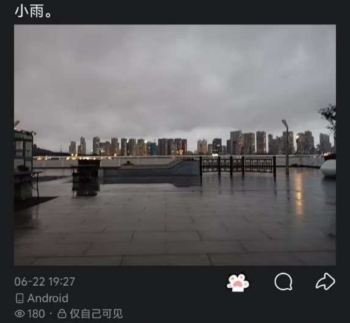

不会起名の捌拐玖捌🍥(二代目)
@CCA8798suki
@Rain_Antar1121 抱抱你...
节哀顺变
祝她Rest In Peace

Rain Antares🏳️⚧️🍥
@Rain_Antar1121
“我知道你会来，所以我在这等你”❤️
小吱吱，我来找你了呢🥹
献给你的白百合，香槟玫瑰，黄菊花，白菊花与满天星哦，还有写给你的小卡片呢
我找了好久好久…在长江边走了四个小时…好热，但我还是照着你离开前两天的动态找到了呀。你表弟说，你看向世界的最后一眼是在旁边的这个亭子里呢 https://t.co/AXb22Bz61i https://t.co/gsJEId3VtJ